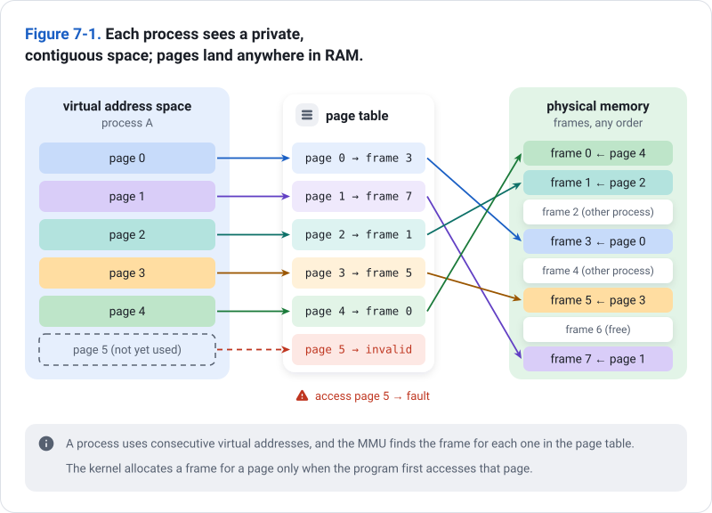
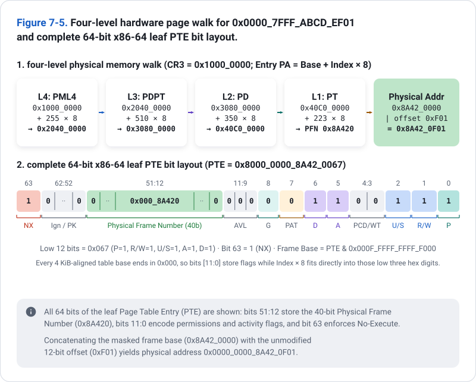
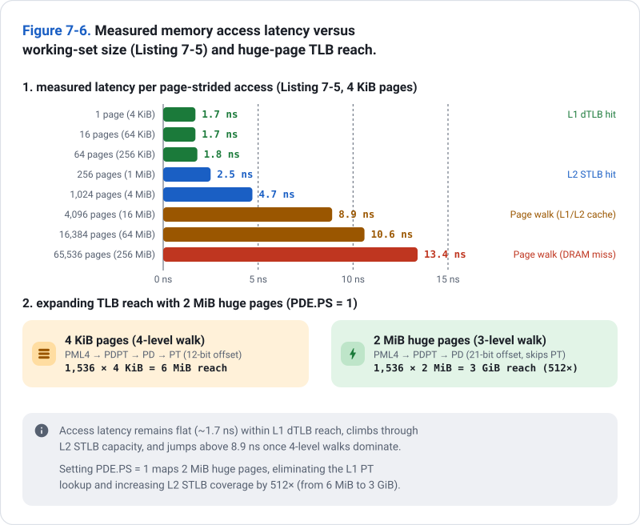

7. Virtual Memory and the Architecture of Address Translation

Virtual memory provides a layer of indirection between a process’s perceived address space and the machine’s physical memory. Without this indirection, processes executing directly against physical main memory (Dynamic Random-Access Memory) would share a single flat namespace: any process could read or overwrite the memory of any other process or the kernel itself, programs would have to be relocated to non-overlapping physical ranges before loading, and allocating contiguous physical regions for growing heaps and stacks would rapidly fragment main memory into unusable gaps.
To resolve these constraints while maintaining native execution speed, the operating system and processor implement address translation around three architectural objectives: transparency, so each process perceives a private, contiguous linear address space starting at a predictable base regardless of where its bytes reside in physical memory; efficiency, so translation neither adds prohibitive latency to instruction execution nor consumes excessive physical memory for metadata; and protection, so a process cannot read, modify, or execute memory outside its authorized domain. By partitioning both the virtual address space into fixed-size pages and physical memory into fixed-size frames of identical width, the operating system achieves granular hardware-enforced isolation, demand-driven resource allocation, and zero-copy memory sharing.
7.1 Page-Based Abstraction and Isolation
The fundamental mechanism of virtual memory is the page table, a per-process data structure maintained by the kernel and consulted by the processor’s Memory Management Unit to map virtual pages (identified by a Virtual Page Number) to physical frames (identified by a Physical Frame Number). Because every virtual page has the exact same size as every physical frame (4,096 bytes on x86-64; 4,096 or 16,384 bytes on ARM64), any virtual page can be placed in any available physical frame in main memory without external fragmentation. This mapping allows the operating system to present a contiguous, linear address space to a program even when the underlying physical frames are scattered arbitrarily across physical memory (Figure 7-1).
Beyond translating frame locations, each Page Table Entry (PTE) embeds hardware permission bits that govern the allowed operations (Read, Write, Execute, and User/Supervisor privilege) for that page. This architecture enforces three foundational guarantees in silicon. First, it enforces process and kernel isolation: a process can reference only the physical frames explicitly mapped with user-accessible permissions (User/Supervisor = 1) in its own page table. Because a process has no valid mapping to sibling processes’ frames, and because kernel pages mapped in the upper address space are marked supervisor-only (User/Supervisor = 0), cross-process interference and unauthorized kernel access trigger an immediate hardware exception before any memory state is altered. Second, it enables demand-driven allocation: virtual address reservation is decoupled from physical frame allocation, so pages that a process has reserved but not yet touched (such as Page 5 in Figure 7-1) remain marked non-present (Present = 0) in the page table and consume zero physical memory until the first access triggers a page fault. Third, it supports controlled sharing and copy-on-write: multiple processes can map their virtual pages to the same physical frames with read-only permissions (Read/Write = 0), enabling shared libraries (libc) and fork() copy-on-write (Section 3.2) to avoid physical memory duplication until a store instruction occurs.

7.2 Hierarchical Translation and the TLB
Consistent with the separation of mechanism and policy established in Section 1.3, virtual memory divides responsibility between the hardware Memory Management Unit (MMU) and the operating system kernel. The kernel manages policy: it allocates physical frames for page tables, programs Page Table Entry (PTE) mappings, and resolves page-fault exceptions. The MMU implements the translation mechanism: on every instruction fetch, load, or store, hardware translates the Virtual Address (VA) into a Physical Address (PA) without invoking the operating system.
7.2.1 Address Decomposition and Hardware Translation
For a machine with an n-bit virtual address space and fixed-size pages of 2k bytes, the MMU partitions every VA into two contiguous bit fields (Figure 7-2):
- Virtual Page Number (
VPN, upper n − k bits): Identifies which virtual page contains the referenced byte (VPN = VA >> k). - Page Offset (lower k bits): Identifies the byte’s exact displacement within that page (
Offset = VA & ((1 << k) - 1)).
Because every virtual page and every physical frame share the exact same byte width (2k bytes) and align on 2k-byte boundaries, relocating a page to any physical frame adds an integer multiple of 2k to its base address, leaving all bit positions below k mathematically invariant. The Page Offset bits therefore pass wire-for-wire from the VA into the PA without modification. On standard x86-64 hardware with 4 KiB (212-byte) pages and 48-bit virtual addresses, bits [47:12] form the 36-bit VPN and bits [11:0] form the 12-bit Page Offset.
During a memory reference, the MMU extracts the VPN and queries the Translation Lookaside Buffer (TLB), a small, core-private associative cache of recent VPN → PFN mappings. On a TLB hit, hardware retrieves the corresponding 40-bit Physical Frame Number (PFN) and verifies the cached permission bits (Present (P), Read/Write (R/W), User/Supervisor (U/S), and No-Execute (NX)) in approximately 0.5 to 1 clock cycle. On a TLB miss, the hardware page-table walker traverses the active process’s page table starting from the root physical base address stored in Control Register 3 (CR3) on x86-64 (or Translation Table Base Register 0 (TTBR0_EL1) and Translation Table Base Register 1 (TTBR1_EL1) on ARM64), caches the resulting leaf PTE in the TLB, and concatenates the PFN with the unmodified 12-bit Page Offset to form the physical bus address:
PA = (PFN << 12) | Offset

7.2.2 Multi-Level Radix Page Tables and Canonical Addressing
On 64-bit architectures, representing the page table as a single flat array is infeasible. A 48-bit virtual address space (248 bytes = 256 TiB) partitioned into 4 KiB (212-byte) pages contains 248 / 212 = 236 (68.7 billion) virtual pages. At 8 bytes per 64-bit PTE, a flat lookup table would consume 236 × 8 bytes = 512 GiB of contiguous physical Dynamic Random-Access Memory (DRAM) per process, regardless of how few pages the process actually maps.
To bound metadata overhead while preserving deterministic hardware lookup depth, the kernel organizes the page table as a sparse, four-level hierarchical radix tree (extended to five levels on processors supporting 57-bit virtual addressing). Each level partitions the address space by a factor of 512: a Level 4 Page Map Level 4 (PML4) entry governs 512 GiB, a Level 3 Page Directory Pointer Table (PDPT) entry governs 1 GiB, a Level 2 Page Directory (PD) entry governs 2 MiB, and a Level 1 Page Table (PT) leaf entry maps a single 4 KiB page (Figure 7-3). Because the hardware walker aborts immediately upon encountering a non-present entry (P = 0), the kernel omits entire unmapped 512 GiB, 1 GiB, or 2 MiB subtrees and allocates physical frames solely for nodes covering active virtual regions. Table 7-1 consolidates the architectural terminology across x86-64, ARM64, and the Linux kernel.
Table 7-1. Architectural terminology in virtual-memory address translation.
| Concept | x86-64 | ARM64 | Linux Kernel | Role in Hardware Translation |
|---|---|---|---|---|
| Translation Unit | Memory Management Unit (MMU) | Memory Management Unit (MMU) | Hardware substrate | Translates VA to PA and enforces permissions on every memory access |
| Addresses | Virtual Address (VA) / Physical Address (PA) | Virtual Address (VA) / Physical Address (PA) | unsigned long / phys_addr_t | Software virtual pointer versus physical memory bus address |
| Block Numbers | Virtual Page Number (VPN) / Physical Frame Number (PFN) | Virtual Page Number (VPN) / Output Address (OA) | Page Frame Number (PFN) (PA >> 12) | Upper address bits identifying a 4 KiB virtual page or physical frame |
| Root Register | Control Register 3 (CR3) | Translation Table Base Register (TTBR0_EL1 / TTBR1_EL1) | mm_struct->pgd | Privileged register holding the physical base address of the root table |
| Level 4 (Root) | Page Map Level 4 (PML4) | Level 0 Translation Table | Page Global Directory (PGD) | Indexed by bits [47:39]; 512 entries, 512 GiB per entry |
| Level 3 | Page Directory Pointer Table (PDPT) | Level 1 Translation Table | Page Upper Directory (PUD) | Indexed by bits [38:30]; 1 GiB per entry (or 1 GiB huge page) |
| Level 2 | Page Directory (PD) | Level 2 Translation Table | Page Middle Directory (PMD) | Indexed by bits [29:21]; 2 MiB per entry (or 2 MiB huge page) |
| Level 1 (Leaf) | Page Table (PT) | Level 3 Translation Table | Page Table Entry (PTE) Table | Indexed by bits [20:12]; maps one 4 KiB page to a physical frame |
| Translation Cache | Translation Lookaside Buffer (TLB) | Translation Lookaside Buffer (TLB) | Hardware TLB | Core-private associative cache of VPN → PFN mappings (~0.5–1 cycle hit) |
| Address-Space Tag | Process-Context Identifier (PCID, 12-bit) | Address Space Identifier (ASID, 8- or 16-bit) | mm->context.id | Tags TLB entries by address space to avoid flushes on context switch |

Two architectural invariants govern the structure of a 64-bit VA before the radix walk begins (Figure 7-4):
- Canonical Address Form (bits
[63:48]): Because 4-level paging translates only bits[47:0], hardware prohibits software from storing arbitrary tags in the unused upper 16 bits, preserving forward compatibility with 5-level paging (57-bitVA). Bits[63:48]must be an exact sign-extension (replication) of bit 47. When bit 47 is0, bits[63:48]must equal0x0000, defining the 128 TiB User Canonical Space (0x0000_0000_0000_0000to0x0000_7FFF_FFFF_FFFF). When bit 47 is1, bits[63:48]must equal0xFFFF, defining the 128 TiB Kernel Canonical Space (0xFFFF_8000_0000_0000to0xFFFF_FFFF_FFFF_FFFF). Any pointer whose upper 16 bits fall into the Non-Canonical Hole raises an immediate General Protection Fault (#GP(0)) before any table walk begins. - The
9-9-9-9-12Radix Geometry (bits[47:0]): Addressing 4,096 = 212 bytes within a 4 KiB frame requires a 12-bit Page Offset (bits [11:0]). Each page-table node occupies exactly one 4 KiB physical frame, and each 64-bitPTEoccupies 8 bytes (23 bytes), yielding 4,096 / 8 = 512 = 29 entries per table. Indexing 512 entries (0to511) requires an unsigned 9-bit index at each of the four radix levels (4 × 9 + 12 = 48 bits). This 9-bit radix width is the exact fan-out that packs one complete table node into one 4 KiB frame with zero internal fragmentation. Extending translation to all 64 bits with 9-bit levels would require 6 levels, increasing everyTLBmiss to 6 dependent memory reads (and up to 36 reads under nested virtualization, Chapter 16), which is why hardware stops at 48 bits (or 57 bits on 5-level systems).

7.2.3 Worked 4-Level Address Translation Walkthrough
Consider the 64-bit user-space virtual address VA = 0x0000_7FFF_ABCD_EF01 (a stack address near the top of the user canonical range) under a page-table hierarchy rooted at CR3 = 0x0000_0000_1000_0000.
Stage 1: Canonicality Verification and Bitwise Index Extraction
The hexadecimal digit covering bits [47:44] is 7 (0111₂), so bit 47 is 0 and bits [63:48] are 0x0000, confirming a valid user canonical address. Because 12 bits equal three 4-bit hexadecimal digits, the Page Offset is read directly from the trailing three hex digits (0xF01 = 3,841). By contrast, because 9 does not divide evenly by 4, each 9-bit table index straddles hex-nibble boundaries (visible directly in the bit cells of Figure 7-4). Shifting and masking the upper 36-bit VPN (0x7FFF_ABCDE) into four 9-bit indices (& 0x1FF) yields:
Hex Nibble: 7 F F F _ A B C D _ E F 0 1
4-Bit Binary: 0111 1111 1111 1111 1010 1011 1100 1101 1110 1111 0000 0001
Bit Position: ^47 ^0
PML4 Index (L4, bits [47:39]): (VA >> 39) & 0x1FF = 0_1111_1111_2 = 0x0FF = 255
PDPT Index (L3, bits [38:30]): (VA >> 30) & 0x1FF = 1_1111_1110_2 = 0x1FE = 510
PD Index (L2, bits [29:21]): (VA >> 21) & 0x1FF = 1_0101_1110_2 = 0x15E = 350
PT Index (L1, bits [20:12]): (VA >> 12) & 0x1FF = 0_1101_1111_2 = 0x0DF = 223
Page Offset (bits [11:0]) : VA & 0xFFF = 1111_0000_0001_2 = 0xF01 = 3,841
Stage 2: Four-Level Physical Memory Walk from CR3
At each radix level, the hardware walker locates the target 8-byte entry inside the current 4 KiB table frame using:
Entry_PA = Table_Base_PA + (Index × 8)
Two properties of 4 KiB alignment simplify this arithmetic in silicon. First, every 4 KiB-aligned Table_Base_PA ends in twelve zero bits (0x...000). Since Index ranges from 0 to 511, Index × 8 ranges from 0x000 to 0xFF8, fitting entirely within those trailing three hex digits without carry propagation. Second, because the next table’s physical base address also ends in twelve zero bits, each 64-bit entry packs status and permission flags into bits [11:0] (plus bit 63 for NX) and stores the 40-bit PFN in bits [51:12]. After validating the permission bits at each level, the MMU applies the mask Entry & 0x000F_FFFF_FFFF_F000 to recover the next table’s 4 KiB-aligned physical base address (Table 7-2 and Figure 7-5).
Table 7-2. Four-level hardware page-table walk for VA = 0x0000_7FFF_ABCD_EF01 (CR3 = 0x1000_0000).
| Hop | Level & Span | Table Base PA | Index | Byte Offset (Idx × 8) | Entry PA Read | 64-Bit Entry Value | Flags & Hardware Check | Next Base (Entry & 0x000F_FFFF_FFFF_F000) |
|---|---|---|---|---|---|---|---|---|
| 1 | L4: PML4 (512 GiB) | 0x1000_0000 | 255 (0x0FF) | 0x7F8 | 0x1000_07F8 | 0x0000_0000_2040_0007 | 0x007 (P=1, R/W=1, U/S=1) | L3 Base: 0x0000_0000_2040_0000 |
| 2 | L3: PDPT (1 GiB) | 0x2040_0000 | 510 (0x1FE) | 0xFF0 | 0x2040_0FF0 | 0x0000_0000_3080_0007 | 0x007 (PS=0, not 1 GiB) | L2 Base: 0x0000_0000_3080_0000 |
| 3 | L2: PD (2 MiB) | 0x3080_0000 | 350 (0x15E) | 0xAF0 | 0x3080_0AF0 | 0x0000_0000_40C0_0007 | 0x007 (PS=0, not 2 MiB) | L1 Base: 0x0000_0000_40C0_0000 |
| 4 | L1: PT (4 KiB) | 0x40C0_0000 | 223 (0x0DF) | 0x6F8 | 0x40C0_06F8 | 0x8000_0000_8A42_0067 | 0x067 + NX=1 (P, R/W, U/S, A, D = 1) | Frame Base: 0x0000_0000_8A42_0000 |
Effective access permissions are the logical intersection across all four levels: clearing U/S or R/W in an upper directory entry restricts the entire subtree beneath it. At Hops 2 and 3, the Page Size (PS) bit is 0, directing the walker to descend to the next level rather than terminating early on a huge page.
Stage 3: Leaf PTE Decoding and Physical Address Assembly
Hop 4 returns the leaf entry PTE = 0x8000_0000_8A42_0067. Unlike the intermediate directory entries (0x...0007), the leaf PTE records hardware-updated activity bits (Accessed (A = 1) and Dirty (D = 1), contributing 0x60 to the low byte 0x67) and sets bit 63 (No-Execute, NX = 1, leading hex digit 8) to enforce non-executable stack data (Table 7-3 and Figure 7-5).
Table 7-3. Architectural bit breakdown of leaf entry PTE = 0x8000_0000_8A42_0067.
| Bits | Field (Full Form & Symbol) | Value | Hardware & Kernel Semantics |
|---|---|---|---|
| 0 | Present (P) | 1 (0x001) | Frame resides in physical memory. If 0, hardware aborts the walk, latches the faulting VA into Control Register 2 (CR2), and raises a Page Fault (#PF, Vector 14). |
| 1 | Read/Write (R/W) | 1 (0x002) | Stores permitted. Cleared to 0 on shared pages during fork() Copy-on-Write (COW) (Section 3.2) so the first write traps to the kernel. |
| 2 | User/Supervisor (U/S) | 1 (0x004) | Accessible from user mode (Ring 3 on x86-64; Exception Level 0 (EL0) on ARM64). Kernel mappings set U/S = 0. |
| 4:3 | Page-Level Cache Disable (PCD) / Page-Level Write-Through (PWT) | 00 | Hardware cache policy (00 = write-back cacheable DRAM; set for uncached Memory-Mapped Input/Output (MMIO) device registers). |
| 5 | Accessed (A) | 1 (0x020) | Set atomically by the MMU on any read or write; scanned and cleared by the kernel page-reclamation daemon to approximate Least Recently Used (LRU) eviction. |
| 6 | Dirty (D) | 1 (0x040) | Set atomically by the MMU on a store instruction; signals that a modified file-backed page must be written back before eviction. |
| 7 | Page Attribute Table (PAT) / Page Size (PS) | 0 | Selects memory-type caching attributes in leaf PTEs; in PD (L2) or PDPT (L3) entries, PS = 1 maps a 2 MiB or 1 GiB huge page directly. |
| 8 | Global (G) | 0 | When 1 (used on shared kernel mappings), preserves the TLB entry across CR3 reloads on context switch. |
| 11:9 | Available for Operating System Use (AVL) | 000 | Ignored by hardware; available for kernel software metadata (for example, swap or copy-on-write markers). |
| 51:12 | Physical Frame Number (PFN) | 0x000_8A420 | 40-bit frame index. Masking PTE & 0x000F_FFFF_FFFF_F000 yields the 4 KiB-aligned frame base 0x0000_0000_8A42_0000. |
| 62:52 | Ignored / Protection Key (Ign / PK) | 0x000 | Ignored / Memory Protection Key (PKU) domain tag when hardware protection keys are enabled. |
| 63 | No-Execute (NX) | 1 (0x8000...) | Hardware Write XOR Execute (W^X) enforcement. Blocks instruction fetches from this stack page in silicon. |
Combining the masked 4 KiB frame base with the unmodified 12-bit Page Offset (0xF01) yields the final physical address:
PA = (PTE & 0x000F_FFFF_FFFF_F000) | (VA & 0x0000_0000_0000_0FFF)
= 0x0000_0000_8A42_0000 | 0x0000_0000_0000_0F01
= 0x0000_0000_8A42_0F01
The MMU inserts VPN 0x7FFF_ABCDE → PFN 0x8A420 into the core’s TLB and issues the memory request for 0x0000_0000_8A42_0F01 to the Level 1 data cache. Subsequent accesses to any byte within 0x0000_7FFF_ABCD_E000 to 0x0000_7FFF_ABCD_EFFF hit in the TLB in a single cycle without walking the page table.

7.2.4 The Translation Lookaside Buffer, Huge Pages, and Shootdowns
Without a TLB, every memory instruction would incur five physical memory accesses: four dependent 8-byte reads across PML4 → PDPT → PD → PT, followed by the data access itself. Even when all four table entries reside in the L1 or L2 data cache, chaining four dependent loads adds roughly 8 to 15 ns; when they miss to DRAM, a single translation stall exceeds 300 ns. The TLB amortizes this cost to ~0.5 to 1 cycle on a hit, and three microarchitectural properties govern its behavior under production workloads (Figure 7-6):
- TLB Reach and Huge Pages (2 MiB / 1 GiB): Single-cycle associative lookup constrains a Level 1 Data Translation Lookaside Buffer (
L1 dTLB) to ~64 entries, backed by a Level 2 Shared Translation Lookaside Buffer (L2 STLB) of 1,024 to 2,048 entries. The total memory span mapped without misses is theTLBreach (Entries × Page Size). With 4 KiB pages, a 64-entryL1 dTLBcovers 256 KiB and a 1,536-entryL2 STLBcovers only 6 MiB. Once an application’s random-access working set exceedsL2 STLBreach, translation misses surge and latency climbs steeply (measured empirically in Listings 7-5 and 7-6). Mapping large arenas with 2 MiB Huge Pages (MAP_HUGETLBorMADV_HUGEPAGE) setsPS = 1in the L2PDentry, terminating the walk one level early and merging bits[20:12]with[11:0]into a 21-bit offset (221 = 2 MiB). The same 1,536-entryL2 STLBthen covers 3 GiB (512× reach) with a 3-level walk. SettingPS = 1in an L3PDPTentry creates a 1 GiB Huge Page (30-bit offset, 2-level walk, 1.5 TiB reach). - Address Space Tagging (
PCID/ASID): Because identical virtual addresses in distinct processes map to different physical frames, legacy x86 processors flushed all non-globalTLBentries on everyCR3reload during a context switch. Modern processors tag eachTLBentry with a 12-bit Process-Context Identifier (PCID) on x86-64 or an 8- or 16-bit Address Space Identifier (ASID) on ARM64. A lookup hits only when bothVPNand the active process tag match, preserving cached translations across context switches and across Kernel Page-Table Isolation (KPTI)CR3switches on every system call. - Cross-Core
TLBShootdowns: Unlike the L1, L2, and L3 data caches, which hardware keeps coherent via cache-coherency protocols (Section 2.2),TLBs are not coherent across processor cores. When a thread unmaps a page (munmap) or restricts permissions (mprotect) in a multi-threaded process, sibling cores may retain stale translations in their localTLBs. The kernel must update thePTEin memory, invalidate its local entry (invlpgon x86-64;tlbion ARM64), and issue synchronous Inter-Processor Interrupts (IPIs) to every core running that address space, stalling those cores until all acknowledgements arrive. This cross-core synchronization cost is a primary reason high-performance memory allocators (Chapter 8) pool and reusemmaparenas rather than returning pages viamunmap()on every deallocation.

7.3 Fault Handling and Memory Management Strategies
While TLB hits and hardware page-table walks execute autonomously in silicon, the kernel enters the virtual-memory datapath when the MMU raises a Page Fault (#PF) exception. Upon encountering a PTE with P = 0 or a permission violation (R/W, U/S, or NX), hardware latches the faulting VA into Control Register 2 (CR2) (or the Fault Address Register (FAR_EL1) on ARM64), pushes an architectural error code encoding the access type and cause onto the kernel stack, and transfers control to the kernel’s page-fault handler (Figure 7-7).
A single load instruction can therefore traverse a six-order-of-magnitude latency hierarchy without any change to application code: ~0.5 ns on an L1 dTLB hit, ~10 to 300 ns on a hardware 4-level page walk, ~1 to 3 µs on a kernel minor page fault, and ~50 µs to 10 ms on a storage-backed major page fault. To classify a #PF, the kernel searches the process’s balanced tree of Virtual Memory Areas (VMA, vm_area_struct in current->mm, Section 3.1.1), which records every valid virtual interval and its logical permissions:
- Zero-Fill Allocation (Minor Fault): The faulting
VAlies inside a valid anonymousVMA(MAP_PRIVATE | MAP_ANON, such as heap or stack) whosePTEhasP = 0. The kernel allocates a free 4 KiB frame, zeroes it to prevent cross-process data leakage, writes thePTEwithP = 1, and restarts the faulting instruction with zero storage Input/Output (I/O). - Demand Paging (Major Fault): The faulting
VAlies inside a file-backedVMAwhose page is not resident inDRAM. The kernel allocates a frame in the page cache, schedules a storage read, blocks the thread untilI/Ocompletes, maps the frame (P = 1), and restarts the instruction. - Copy-on-Write (
COW): Afterfork()(Section 3.2), parent and child share frames marked read-only (R/W = 0) in theirPTEs while theirVMAs allow writes (VM_WRITE). A store traps onR/W = 0; the kernel allocates a fresh 4 KiB frame, copies the page contents, updates the writing process’sPTEwithR/W = 1, and resumes execution. - Protection Violation: The faulting
VAfalls outside every registeredVMA(for example, a null-pointer dereference) or violates theVMA’s logical permissions (writing to read-only text or touching aPROT_NONEguard page). The kernel delivers a synchronous fatal signal: Segmentation Violation (SIGSEGV) on Linux, or Bus Error (SIGBUS) on macOS.

Separating virtual address reservation from hardware PTE permissions enables guard pages: virtual pages mapped with mprotect(addr, page_size, PROT_NONE) at the end of thread stacks or allocator regions to trap overflows immediately in silicon before adjacent memory is corrupted. Likewise, mapping files with mmap exposes kernel page-cache frames directly in the process’s virtual address space, eliminating the system-call and buffer-copying overhead of explicit read(2) calls.
7.3.1 The mmap and mprotect System Call Interface
The parameters of mmap(addr, length, prot, flags, fd, offset) and mprotect(addr, length, prot) map directly onto the page-table and VMA structures described in Sections 7.2 and 7.3:
- Address Hint (
addr) and Length (length): Passingnullptr(ptr::null_mut()in Rust) lets the kernel choose an unused, page-aligned virtual base address (4,096bytes on x86-64;16,384bytes on Apple Silicon ARM64). The kernel roundslengthupward to an exact multiple of the hardware page size. - Protection Bitmask (
prot): Sets the hardware permission bits in each mapped leafPTE.PROT_READenables loads,PROT_WRITEsetsR/W = 1while retainingNX = 1, andPROT_NONErevokes all permissions to establish a guard page while keeping the virtual range reserved. - Visibility and Backing Flags (
flags):MAP_PRIVATEcreates a private copy-on-write mapping whose modifications never propagate to the backing file;MAP_SHAREDshares physical frames across processes (Chapter 11) and flushes writes back to file-backed storage. CombiningMAP_PRIVATE | MAP_ANON(MAP_ANONYMOUSon Linux) allocates demand-zeroed anonymous memory unbacked by any file, for which the Portable Operating System Interface (POSIX) standard requiresfd = -1andoffset = 0. - Error Contract and Reclamation: On failure,
mmapreturnsMAP_FAILED((void*)-1) rather thannullptrand setserrno. Callers must verifymapped != MAP_FAILEDbefore dereferencing the region and release mappings withmunmap(addr, length).
Listing 7-1. Page size, page alignment, and a guard page (C++20).
// ch07/pagesize.cpp: Queries hardware page size, maps three contiguous virtual pages,
// and converts the middle page into an inaccessible guard page via mprotect(PROT_NONE).
#include <sys/mman.h>
#include <unistd.h>
#include <csignal>
#include <csetjmp>
#include <cstdio>
static sigjmp_buf g_recovery_env;
static volatile void* g_fault_address = nullptr;
// Signal handler invoked by the kernel when the MMU raises a page protection fault.
static void on_protection_fault(int, siginfo_t* sig_info, void*) {
g_fault_address = sig_info->si_addr; // Exact virtual address that triggered the fault
siglongjmp(g_recovery_env, 1); // Resume execution cleanly in main()
}
int main() {
// Query the hardware virtual-memory page granularity (4,096 B on x86-64; 16,384 B on Apple Silicon).
long page_size = sysconf(_SC_PAGESIZE);
printf("page size: %ld bytes\n", page_size);
// Map three contiguous anonymous virtual pages with read/write permissions.
// The kernel guarantees the returned base address is aligned to `page_size`.
char* mapped_region = static_cast<char*>(
mmap(nullptr, 3 * page_size, PROT_READ | PROT_WRITE, MAP_PRIVATE | MAP_ANON, -1, 0));
if (mapped_region == MAP_FAILED) {
perror("mmap");
return 1;
}
printf("region: %p (page-aligned by construction)\n", static_cast<void*>(mapped_region));
// Write one byte into Page 0, Page 1, and Page 2 (triggering demand-zero physical frame allocation).
mapped_region[0] = 'a';
mapped_region[page_size] = 'b';
mapped_region[2 * page_size] = 'c';
// Convert Page 1 (the middle page) into a guard page by stripping all PTE permissions (PROT_NONE).
if (mprotect(mapped_region + page_size, page_size, PROT_NONE) != 0) {
perror("mprotect");
return 1;
}
struct sigaction signal_action {};
signal_action.sa_sigaction = on_protection_fault;
signal_action.sa_flags = SA_SIGINFO; // Deliver siginfo_t containing the faulting virtual address
sigemptyset(&signal_action.sa_mask);
// Linux delivers SIGSEGV for PTE permission faults; macOS/Darwin delivers SIGBUS.
sigaction(SIGSEGV, &signal_action, nullptr);
sigaction(SIGBUS, &signal_action, nullptr);
if (sigsetjmp(g_recovery_env, 1) == 0) {
mapped_region[page_size] = 'x'; // Triggers hardware page protection fault on Page 1
printf("write succeeded (unexpected)\n");
} else {
printf("fault on write to %p\n", g_fault_address);
printf("fault address is the guard page: %s\n",
g_fault_address == static_cast<void*>(mapped_region + page_size) ? "yes" : "no");
}
// Neighboring Page 0 and Page 2 retain their permissions and data intact.
printf("neighbors still readable: %c %c\n", mapped_region[0], mapped_region[2 * page_size]);
munmap(mapped_region, 3 * page_size);
}
Output 7-1. The fault occurs on the protected page.
page size: 4096 bytes
region: 0x10b4dd000 (page-aligned by construction)
fault on write to 0x10b4de000
fault address is the guard page: yes
neighbors still readable: a c
Listing 7-2. Mapping and protecting pages in Rust, using the libc crate.
// ch07/pagesize.rs: Queries hardware page size, maps three contiguous virtual pages,
// and strips permissions from the middle guard page via mprotect(PROT_NONE).
use std::process::exit;
use std::ptr;
fn main() {
// SAFETY: `_SC_PAGESIZE` is a read-only POSIX configuration constant returning
// the CPU MMU's native page granularity (4,096 B on x86-64; 16,384 B on Apple Silicon).
let page_size = unsafe { libc::sysconf(libc::_SC_PAGESIZE) as usize };
println!("page size: {page_size} bytes");
// SAFETY: Anonymous private mapping (`MAP_PRIVATE | MAP_ANON`) of `3 * page_size` bytes.
// Checking `mapped_region != MAP_FAILED` guarantees a valid page-aligned virtual range.
let mapped_region = unsafe {
libc::mmap(
ptr::null_mut(),
3 * page_size,
libc::PROT_READ | libc::PROT_WRITE,
libc::MAP_PRIVATE | libc::MAP_ANON,
-1,
0,
)
};
if mapped_region == libc::MAP_FAILED {
eprintln!("mmap failed");
exit(1);
}
println!("region: {mapped_region:p} (page-aligned by construction)");
unsafe {
// SAFETY: `mapped_region` spans 3 writable pages starting at a page-aligned address.
// Writing to offsets 0, `page_size`, and `2 * page_size` touches Page 0, Page 1, and Page 2.
ptr::write(mapped_region.cast::<u8>(), b'a');
ptr::write(mapped_region.cast::<u8>().add(page_size), b'b');
ptr::write(mapped_region.cast::<u8>().add(2 * page_size), b'c');
// Convert Page 1 (middle page) into a guard page by setting PTE permissions to PROT_NONE.
// SAFETY: `mapped_region + page_size` is page-aligned and lies strictly within the mapping.
let mprotect_status = libc::mprotect(
mapped_region.cast::<u8>().add(page_size) as *mut libc::c_void,
page_size,
libc::PROT_NONE,
);
println!("mprotect(middle page, PROT_NONE): status={mprotect_status}");
// SAFETY: Unmaps the exact base address and length returned by `mmap`.
libc::munmap(mapped_region, 3 * page_size);
}
}Output 7-2.
page size: 4096 bytes
region: 0x1086e2000 (page-aligned by construction)
mprotect(middle page, PROT_NONE): status=0
Listing 7-3. Reading one file with read(2) and with mmap (C++20).
// ch07/mmap_file.cpp: Compares counting bytes via read(2) (kernel-to-user copy)
// against reading directly through an mmap(2) virtual memory mapping.
#include <fcntl.h>
#include <sys/mman.h>
#include <sys/stat.h>
#include <unistd.h>
#include <cstdio>
#include <vector>
int main() {
const char* file_path = "/tmp/osbook_mmap_demo.txt";
constexpr size_t kFileBytes = 4 * 1024 * 1024; // 4 MiB test file
constexpr size_t kLineBytes = 64; // 63 'a' characters + '\n'
// Step 1: Create and populate the 4 MiB file (65,536 lines of 64 bytes).
int file_fd = open(file_path, O_CREAT | O_RDWR | O_TRUNC, 0644);
if (file_fd < 0) {
perror("open");
return 1;
}
std::vector<char> line_buffer(kLineBytes, 'a');
line_buffer[kLineBytes - 1] = '\n';
for (size_t byte_offset = 0; byte_offset < kFileBytes; byte_offset += kLineBytes) {
write(file_fd, line_buffer.data(), kLineBytes);
}
fsync(file_fd);
// Step 2: Count 'a' bytes via read(2), which copies data from the kernel page cache
// into our user-space `read_buffer` on every system call.
lseek(file_fd, 0, SEEK_SET);
long count_via_read = 0;
char read_buffer[8192];
ssize_t bytes_read = 0;
while ((bytes_read = read(file_fd, read_buffer, sizeof read_buffer)) > 0) {
for (ssize_t index = 0; index < bytes_read; ++index) {
if (read_buffer[index] == 'a') ++count_via_read;
}
}
// Step 3: Map the file directly into our virtual address space via mmap(2).
// Hardware page faults map the kernel page cache frames directly into user PTEs.
char* mapped_file = static_cast<char*>(
mmap(nullptr, kFileBytes, PROT_READ, MAP_PRIVATE, file_fd, 0));
if (mapped_file == MAP_FAILED) {
perror("mmap");
return 1;
}
long count_via_mmap = 0;
for (size_t index = 0; index < kFileBytes; ++index) {
if (mapped_file[index] == 'a') ++count_via_mmap;
}
struct stat file_stat {};
fstat(file_fd, &file_stat);
printf("file size : %lld bytes\n", static_cast<long long>(file_stat.st_size));
printf("read(2) : %ld 'a' characters\n", count_via_read);
printf("mmap : %ld 'a' characters\n", count_via_mmap);
printf("match : %s\n", count_via_read == count_via_mmap ? "yes" : "NO");
munmap(mapped_file, kFileBytes);
close(file_fd);
unlink(file_path);
}
Output 7-3. Both methods count 4,128,768 characters.
file size : 4194304 bytes
read(2) : 4128768 'a' characters
mmap : 4128768 'a' characters
match : yes
Listing 7-4. The same file-mapping comparison in Rust, using the libc crate.
// ch07/mmap_file.rs: Compares counting bytes via read(2) (kernel-to-user copy)
// against reading directly through an mmap(2) virtual memory mapping.
extern crate libc;
use std::ptr;
use std::slice;
const FILE_BYTES: usize = 4 * 1024 * 1024; // 4 MiB test file
const LINE_BYTES: usize = 64; // 63 'a' characters + '\n'
fn main() {
let file_path = b"/tmp/osbook_mmap_demo_rs.txt\0";
// SAFETY: `file_path` is a NUL-terminated path; mode 0o644 creates a readable/writable file.
let file_fd = unsafe {
libc::open(
file_path.as_ptr() as *const libc::c_char,
libc::O_CREAT | libc::O_RDWR | libc::O_TRUNC,
0o644 as libc::c_uint,
)
};
assert!(file_fd >= 0, "open failed");
let mut line_buffer = [b'a'; LINE_BYTES];
line_buffer[LINE_BYTES - 1] = b'\n';
for _ in (0..FILE_BYTES).step_by(LINE_BYTES) {
// SAFETY: `file_fd` is open for writing and `line_buffer` provides `LINE_BYTES` valid bytes.
let bytes_written = unsafe {
libc::write(file_fd, line_buffer.as_ptr() as *const libc::c_void, LINE_BYTES)
};
assert_eq!(bytes_written, LINE_BYTES as isize);
}
// SAFETY: `file_fd` is an open file descriptor; sync data and rewind offset to byte 0.
unsafe {
libc::fsync(file_fd);
libc::lseek(file_fd, 0, libc::SEEK_SET);
}
// Step 2: Count 'a' bytes via read(2) (copies from kernel page cache into user buffer).
let mut count_via_read: usize = 0;
let mut read_buffer = [0_u8; 8192];
loop {
// SAFETY: `file_fd` is readable and `read_buffer` provides 8,192 writable bytes.
let bytes_read = unsafe {
libc::read(
file_fd,
read_buffer.as_mut_ptr() as *mut libc::c_void,
read_buffer.len(),
)
};
if bytes_read <= 0 {
break;
}
count_via_read += read_buffer[..bytes_read as usize]
.iter()
.filter(|&&byte| byte == b'a')
.count();
}
// Step 3: Map the file directly into virtual memory (no explicit user-buffer copy).
// SAFETY: Read-only private mapping of `FILE_BYTES` backed by `file_fd`.
let mapped_ptr = unsafe {
libc::mmap(
ptr::null_mut(),
FILE_BYTES,
libc::PROT_READ,
libc::MAP_PRIVATE,
file_fd,
0,
)
};
assert_ne!(mapped_ptr, libc::MAP_FAILED, "mmap failed");
// SAFETY: `mapped_ptr` is verified valid and remains read-only and mapped until `munmap`.
let mapped_slice = unsafe { slice::from_raw_parts(mapped_ptr as *const u8, FILE_BYTES) };
let count_via_mmap = mapped_slice.iter().filter(|&&byte| byte == b'a').count();
println!("file size : {FILE_BYTES} bytes");
println!("read(2) : {count_via_read} 'a' characters");
println!("mmap : {count_via_mmap} 'a' characters");
println!(
"match : {}",
if count_via_read == count_via_mmap { "yes" } else { "NO" }
);
// SAFETY: Unmaps the exact mapping, closes `file_fd`, and removes the temporary file.
unsafe {
libc::munmap(mapped_ptr, FILE_BYTES);
libc::close(file_fd);
libc::unlink(file_path.as_ptr() as *const libc::c_char);
}
}Output 7-4.
file size : 4194304 bytes
read(2) : 4128768 'a' characters
mmap : 4128768 'a' characters
match : yes
Listing 7-5. One access per page, for a growing number of pages (C++20).
// ch07/tlb.cpp: Measures per-access latency while sweeping the working set upward,
// stepping by one full hardware page per access so latency cliffs reveal TLB capacity.
#include <sys/mman.h>
#include <unistd.h>
#include <chrono>
#include <cstdint>
#include <cstdio>
static double measure_ns_per_access(size_t working_set_bytes, uint64_t total_accesses) {
const size_t page_size = static_cast<size_t>(sysconf(_SC_PAGESIZE));
char* region = static_cast<char*>(
mmap(nullptr, working_set_bytes, PROT_READ | PROT_WRITE,
MAP_PRIVATE | MAP_ANON, -1, 0));
if (region == MAP_FAILED) return -1.0;
const size_t page_count = working_set_bytes / page_size;
// Pre-fault every page once so page-allocation traps do not distort TLB timings.
for (size_t page_index = 0; page_index < page_count; ++page_index) {
region[page_index * page_size] = 1;
}
uint64_t checksum = 0;
size_t page_index = 0;
auto start_time = std::chrono::steady_clock::now();
for (uint64_t step = 0; step < total_accesses; ++step) {
checksum += static_cast<uint8_t>(region[page_index * page_size]);
if (++page_index == page_count) page_index = 0;
}
auto end_time = std::chrono::steady_clock::now();
double ns_per_access =
std::chrono::duration<double, std::nano>(end_time - start_time).count() / total_accesses;
printf(" %9zu bytes %7zu pages %6.1f ns per access (checksum %llu)\n",
working_set_bytes, page_count, ns_per_access,
static_cast<unsigned long long>(checksum));
munmap(region, working_set_bytes);
return ns_per_access;
}
int main() {
constexpr uint64_t kTotalAccesses = 4'000'000;
printf("one access per page, %llu accesses per working-set size\n\n",
static_cast<unsigned long long>(kTotalAccesses));
for (size_t bytes : {
size_t{4} * 1024, size_t{64} * 1024, size_t{256} * 1024,
size_t{1} << 20, size_t{4} << 20, size_t{16} << 20,
size_t{64} << 20, size_t{256} << 20,
}) {
measure_ns_per_access(bytes, kTotalAccesses);
}
}
Output 7-5. One run on the verification machine.
one access per page, 4000000 accesses per working-set size
4096 bytes 1 pages 1.7 ns per access (checksum 4000000)
65536 bytes 16 pages 1.7 ns per access (checksum 4000000)
262144 bytes 64 pages 1.8 ns per access (checksum 4000000)
1048576 bytes 256 pages 2.5 ns per access (checksum 4000000)
4194304 bytes 1024 pages 4.7 ns per access (checksum 4000000)
16777216 bytes 4096 pages 8.9 ns per access (checksum 4000000)
67108864 bytes 16384 pages 10.6 ns per access (checksum 4000000)
268435456 bytes 65536 pages 13.4 ns per access (checksum 4000000)
Listing 7-6. The same Translation Lookaside Buffer working-set sweep in Rust.
// ch07/tlb.rs: Measures per-access latency while sweeping the working set upward,
// stepping by one full hardware page per access so latency cliffs reveal TLB capacity.
extern crate libc;
use std::ptr;
use std::slice;
use std::time::Instant;
fn measure_ns_per_access(working_set_bytes: usize, total_accesses: u64) {
// SAFETY: `_SC_PAGESIZE` queries the read-only OS hardware page granularity.
let page_size = unsafe { libc::sysconf(libc::_SC_PAGESIZE) } as usize;
// SAFETY: Anonymous private mapping of `working_set_bytes`; validated against `MAP_FAILED`.
let region_ptr = unsafe {
libc::mmap(
ptr::null_mut(),
working_set_bytes,
libc::PROT_READ | libc::PROT_WRITE,
libc::MAP_PRIVATE | libc::MAP_ANON,
-1,
0,
)
};
assert_ne!(region_ptr, libc::MAP_FAILED, "mmap failed");
// SAFETY: `region_ptr` is an exclusively owned, zero-initialized mapping valid until `munmap`.
let mapped_bytes =
unsafe { slice::from_raw_parts_mut(region_ptr as *mut u8, working_set_bytes) };
let page_count = working_set_bytes / page_size;
// Pre-fault every page once so page-allocation traps do not distort TLB timings.
for page_index in 0..page_count {
mapped_bytes[page_index * page_size] = 1;
}
let mut checksum: u64 = 0;
let mut page_index: usize = 0;
let start_time = Instant::now();
for _ in 0..total_accesses {
checksum += u64::from(mapped_bytes[page_index * page_size]);
page_index += 1;
if page_index == page_count {
page_index = 0;
}
}
let ns_per_access = start_time.elapsed().as_nanos() as f64 / total_accesses as f64;
println!(
" {working_set_bytes:9} bytes {page_count:7} pages {ns_per_access:6.1} ns per access (checksum {checksum})"
);
// SAFETY: `mapped_bytes` is no longer referenced; unmaps the exact mapping from `mmap`.
unsafe {
libc::munmap(region_ptr, working_set_bytes);
}
}
fn main() {
const TOTAL_ACCESSES: u64 = 4_000_000;
println!("one access per page, {TOTAL_ACCESSES} accesses per working-set size\n");
for &working_set_bytes in &[
4 * 1024,
64 * 1024,
256 * 1024,
1 << 20,
4 << 20,
16 << 20,
64 << 20,
256 << 20,
] {
measure_ns_per_access(working_set_bytes, TOTAL_ACCESSES);
}
}Output 7-6.
one access per page, 4000000 accesses per working-set size
4096 bytes 1 pages 1.8 ns per access (checksum 4000000)
65536 bytes 16 pages 1.9 ns per access (checksum 4000000)
262144 bytes 64 pages 1.9 ns per access (checksum 4000000)
1048576 bytes 256 pages 2.1 ns per access (checksum 4000000)
4194304 bytes 1024 pages 4.0 ns per access (checksum 4000000)
16777216 bytes 4096 pages 11.4 ns per access (checksum 4000000)
67108864 bytes 16384 pages 11.3 ns per access (checksum 4000000)
268435456 bytes 65536 pages 13.3 ns per access (checksum 4000000)
Virtual memory is a hardware-software co-design: the kernel defines policy by populating sparse 4-level radix page tables and servicing #PF faults lazily, while the MMU and TLB execute translation in ~1 cycle on the fast path, keeping the 12-bit page offset invariant under 4 KiB frame relocation.
Run Listing 7-5 (code/ch07/tlb.cpp) on a local machine and inspect where per-access latency steps upward sharply (at ~64 pages for L1 dTLB overflow and ~1,024 to 4,096 pages for L2 STLB overflow). On Linux, add madvise(buf, size, MADV_HUGEPAGE) after mmap() to observe 2 MiB huge pages flattening the 16 MiB to 256 MiB cliff.
Checking mmap() failure against nullptr instead of MAP_FAILED ((void*)-1). A failed mmap() returns (void*)-1, which evaluates as truthy in C and C++, causing the very next memory dereference to trigger an immediate SIGSEGV at address 0xFFFF_FFFF_FFFF_FFFF.